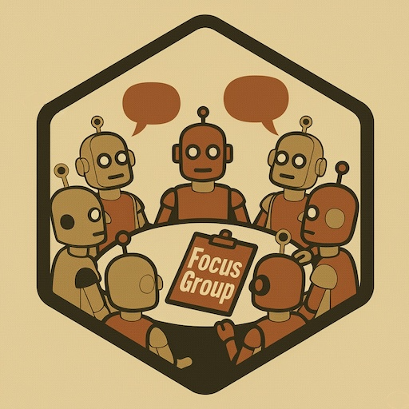

Overview
FocusGroup runs a moderated discussion in which language models act as the moderator and participants. A moderator guide determines what the moderator does, and a conversation flow selects each participant. The package records each message, its phase and round, response metadata, and token use in a FocusGroup object. Model requests use LLMR.
The package is intended for piloting moderator guides and discussion protocols before fieldwork. A generated transcript records model responses under a specified guide, persona set, and model configuration. It is not an estimate of public opinion.
The principal public objects are:
-
run_focus_group(), which constructs and runs a complete session. -
FGAgent, which represents one participant or moderator and stores itsconfig. -
FocusGroup, which owns the roster, guide, flow, prompts, and session log. -
ConversationFlow, the extension base class for speaker-selection rules. -
create_agents(),create_agents_from_data(), andcreate_agents_from_survey(), which construct agents from supplied personas or respondent records. -
create_conversation_flow(), which constructs a built-in flow from a mode name. -
focus_group_from_transcript(), which imports an existing transcript. -
analyze_focus_group(), which runs the main transcript analyses. -
run_focus_studio(), which starts the optional Shiny interface.
FocusGroup is experimental. Its public interface may change before a stable release.
Installation
install.packages("LLMR")
remotes::install_github("asanaei/FocusGroup")Text analysis and plotting use optional packages:
install.packages(c("ggplot2", "quanteda", "quanteda.textstats",
"topicmodels", "tidytext"))Set the provider key in an environment variable before making a live provider call. For an OpenAI model, LLMR reads OPENAI_API_KEY.
Run a focus group
Every operation that generates model output requires an explicit config. guide accepts phase counts or ordered moderator instructions. Supported phase names are Opening, Icebreaker, Engagement, Exploration, and Closing.
library(FocusGroup)
library(LLMR)
config <- LLMR::llm_config(
provider = "openai",
model = "gpt-4o-mini",
temperature = 0.7,
max_tokens = 200
)
moderator_guide <- list(
Opening = "Welcome the group and state the ground rules.",
Icebreaker = c(
"What first comes to mind when you think about remote work?",
"What experience has shaped that impression?"
),
Engagement = "Where does remote work enter your daily routine?",
Exploration = c(
"What tensions arise between flexibility and coordination?",
"Whose perspective has received too little attention?"
),
Closing = "Thank the participants and close the session."
)
result <- run_focus_group(
topic = "The impact of remote work on team collaboration",
n_participants = 4,
guide = moderator_guide,
flow = "desire_based",
config = config,
seed = 110,
message_mode = "roleflip",
verbose = TRUE
)
print(result)
head(result$transcript, 5)
result$usage
cat(result$summary)run_focus_group() returns a focus_group_result with stable fields: focus_group, transcript, summary, participants, usage, and metadata. participants is a data frame. usage uses LLMR’s sent, rec, and total token vocabulary. metadata contains topic, purpose, flow, message_mode, n_participants, estimated_calls, provider, and model. Credentials are never included.
Before a live run, the function estimates the number of model calls. A request above max_calls stops unless confirm = TRUE. Retries and incomplete outputs can increase the realized call count. Supplying .runner bypasses this live cost stop.
A FocusGroup object represents one session and runs once. Construct another object for another full session. The continuation experiment in run_focus_studio() is the documented path for comparing generated continuations from an existing session.
Run a session without a provider
The .runner seam uses the same experiments-frame contract as LLMRcontent archive replay. It receives a data frame with config and messages list-columns and returns those rows with at least response_text. An explicit configuration remains required because it is part of each experiment row.
scripted_runner <- function(experiments, ...) {
experiments$response_text <- vapply(experiments$messages, function(messages) {
prompt <- paste(vapply(messages, `[[`, character(1), "content"),
collapse = "\n")
if (grepl("Desire to talk score", prompt, fixed = TRUE)) {
return("8")
}
if (grepl("Summary:", prompt, fixed = TRUE)) {
return("The session recorded distinct positions and a disagreement.")
}
paste(
"This scripted response states one position on library funding and gives",
"a concrete reason that another participant could examine."
)
}, character(1))
experiments$success <- TRUE
experiments
}
offline_config <- LLMR::llm_config("openai", "gpt-4o-mini")
offline_result <- run_focus_group(
topic = "Library funding priorities",
n_participants = 2,
guide = list(
Opening = "Welcome the group.",
Engagement = "Which funding priority matters most?",
Closing = "Thank the participants and close the session."
),
flow = "round_robin",
config = offline_config,
max_participant_responses = 1,
verbose = FALSE,
.runner = scripted_runner
)
offline_result$focus_group$analyze()$speaker_statsConstruct the R6 objects directly
Built-in turn-taking implementations are constructed through create_conversation_flow(). ConversationFlow remains public so new flow classes can inherit from it.
agents <- create_agents(
n_participants = 3,
config = config
)
session_flow <- create_conversation_flow(
mode = "round_robin",
agents = agents,
moderator_id = "MOD"
)
fg <- FocusGroup$new(
topic = "Weekend preferences and activities",
purpose = "Describe how participants prefer to spend their weekends.",
agents = agents,
moderator_id = "MOD",
turn_taking_flow = session_flow,
question_script = list(
list(phase = "opening"),
list(
phase = "exploration_question",
text = "What makes a weekend relaxing or fulfilling for you?"
),
list(phase = "closing")
),
admin_config = config
)
fg$run_simulation(verbose = TRUE)FGAgent$new() also takes config; its public configuration field has the same name. Public model-dependent methods use config, and caller-controlled execution uses .runner as the final ordinary seam.
Create agents from respondent data
create_agents_from_survey() reads Stata, SPSS, and SAS files with haven. It decodes selected values from their labels and uses variable labels as question text. create_agents_from_data() accepts an in-memory data frame, including a pre-rendered persona panel with persona and persona_id columns.
data(anes_2024_personas, package = "LLMR")
panel_agents <- create_agents_from_data(
anes_2024_personas,
n_participants = 6,
config = config
)When a direct persona is absent, create_agents() renders the supplied demographic fields and survey responses. It does not infer dispositions from demographic labels.
Import a transcript
Pass moderator_id when the moderator is known. When it is omitted, the importer falls back to matching "mod" within speaker identifiers. Importing and descriptive analysis make no model call.
transcript <- data.frame(
speaker = c("Facilitator", "P1", "P2"),
text = c("What should change?", "Service frequency.", "Lower fares.")
)
imported <- focus_group_from_transcript(
transcript,
topic = "Public transit",
moderator_id = "Facilitator"
)Analysis
analyze_focus_group() returns a focus_group_analysis with a fixed field set: basic_stats, topics, tfidf, readability, themes, model_summary, plots, and issues. Components that cannot be computed have typed empty values. plots is an empty list when ggplot2 is unavailable, and issues names each optional analysis that failed and gives its reason.
Descriptive analyses run offline. Thematic analysis and model summaries are opt-in and run only when the caller supplies config:
offline_analysis <- analyze_focus_group(imported, include_plots = FALSE)
model_analysis <- analyze_focus_group(result, config = config)A requested model analysis does not convert a provider failure into a missing component. The provider condition is raised to the caller.
FocusGroup does not export specialized report constructors. LLMR::report() is the ecosystem reporting entry point.
Prompts
get_default_prompt_templates() returns the supported participant, moderator, desire-scoring, and thematic-analysis templates. Modify named entries and pass the list as prompt_templates when constructing a FocusGroup.
Shiny interface
run_focus_studio() starts the optional Shiny application. Its run path uses run_focus_group(). Its analysis tab reads participation and word statistics offline, and its continuation experiment compares the next generated message under an original and edited history.
Contributing
Report bugs and feature requests in the GitHub repository. Pull requests may be submitted there.